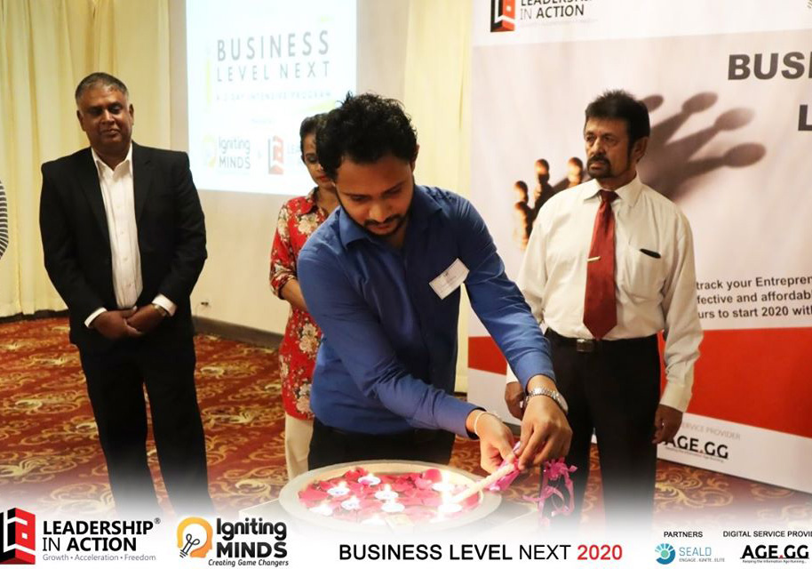
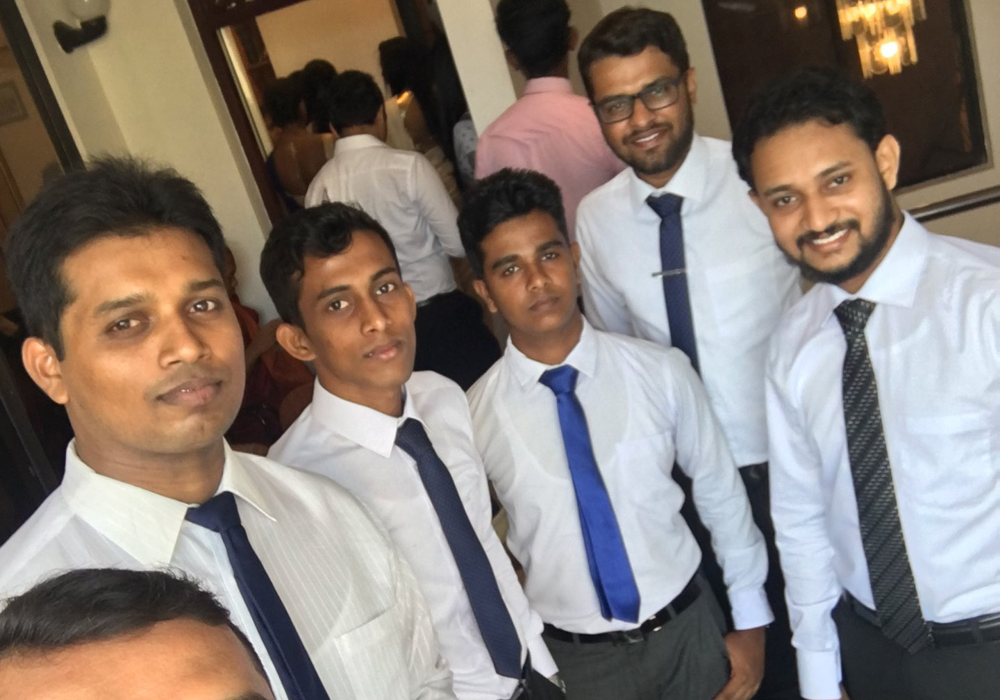

|
|
HARSHANA GAMAGE
(He/Him)
Email: nath23aq@student.ju.se | Mobile: +46 73-960-40-76 |
As a highly driven professional with almost a decade of experience an entrepreneur, I have a diverse background that has equipped me with valuable skills in leadership, critical thinking, problem-solving, and management. My career journey started as a Software Engineer where I honed my technical abilities and gained a deep understanding of software product development.
My passion for mentoring, investing, and educating startups led me to establish FutureTechMinds (Pvt) Ltd in 2019. This venture allows me to share my expertise and help aspiring entrepreneurs to achieve their business goals. Additionally, I founded Product Tavern to consolidate my extensive knowledge in product development over the past decade.
In summary, my experience and passion for software product development, innovation, and strategy, coupled with my leadership and mentoring skills, have enabled me to make significant contributions in growth of all my companies. I am eager to continue pushing boundaries and driving growth in my future endeavors.
|  |  |
Experience
-
Founder : Future Tech Minds
We are the only Educational Institute that offers practical industrial training programs to School Leavers, Fresh Graduates and Job Seekers to find their dream job.
-
Mobile UI/UX Designer : Easy Soft (Pvt) Ltd
Collaborated with cross-functional teams to design and develop engaging mobile apps for clients across various industries as the UI/UX Designer.
Education
-
New Media Design : Jönköping University
Entrepreneurship · Human Computer Interaction · Business Planning · Web Application Development · Business Strategy · User Experience (UX) · Project Management
-
MBA : Wrexham University UK
Master of Business Administration - MBA, Business, Management, Marketing, and Related Support ServicesMaster of Business Administration - MBA, Business, Management, Marketing, and Related Support Services
Volunteering
-
Member : Elephant Conservation Center
Nestled within the breathtaking surrounds of the Sri Lankan jungle, this project offers volunteers the opportunity to take part in vital ecological research on the region’s elephants. An overarching aim of the project is to assess and reduce human-elephant conflicts in the area, an issue which has become greater in recent years. As a volunteer, you will assist in the implementation of sustainable land-use initiatives using GPS, remote sensing and GIS techniques to develop conservation strategies which in turn will help to protect elephants and other wildlife in the Central and North Central Provinces of Sri Lanka.
-
Member : Turtle Rehabilitation and Care
This project is situated on a beach in Ambalangoda, a small town in the South of Sri Lanka. This conservation project is one of only 9 wounded turtle conservations in the country. Our project is certified by the Sri Lankan government and offers volunteers the chance to help with this valued and endangered species.
Languages
-
Sinhala : Native
-
English : Full professional
-
Swedish : Trying to learn 😀
My Social Media

|

|

|

|